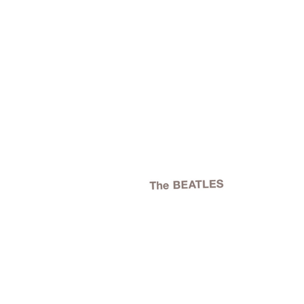
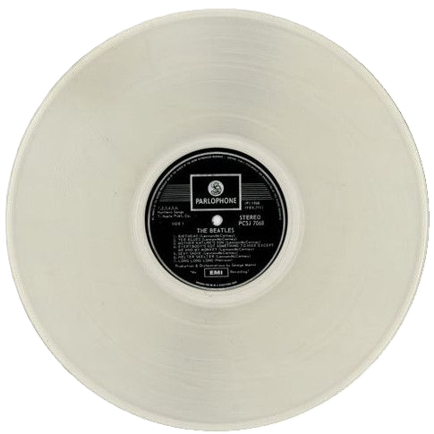
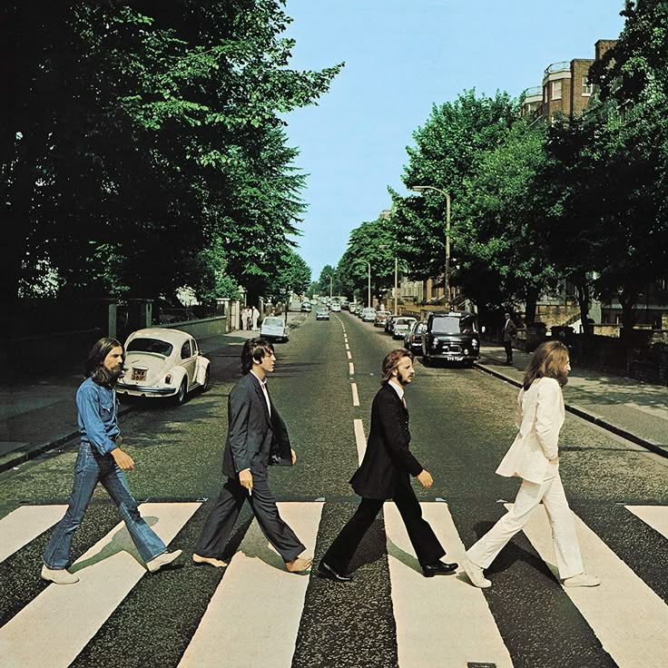
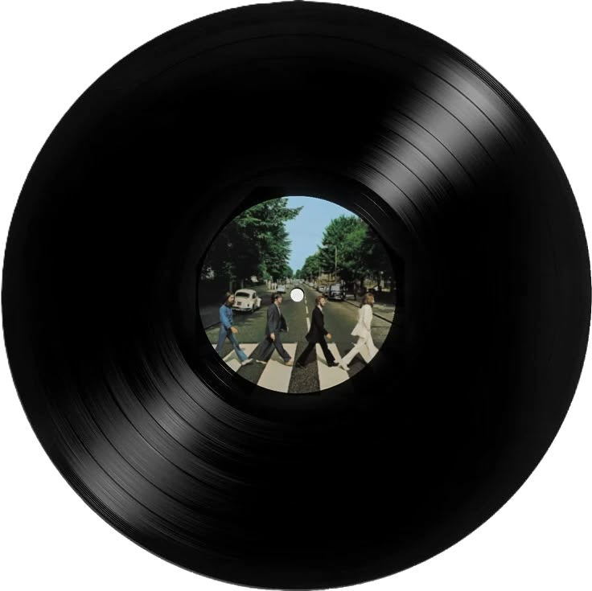
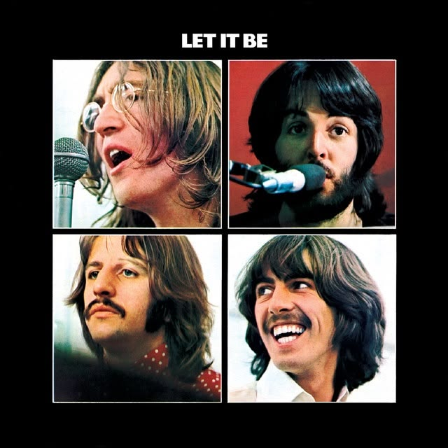
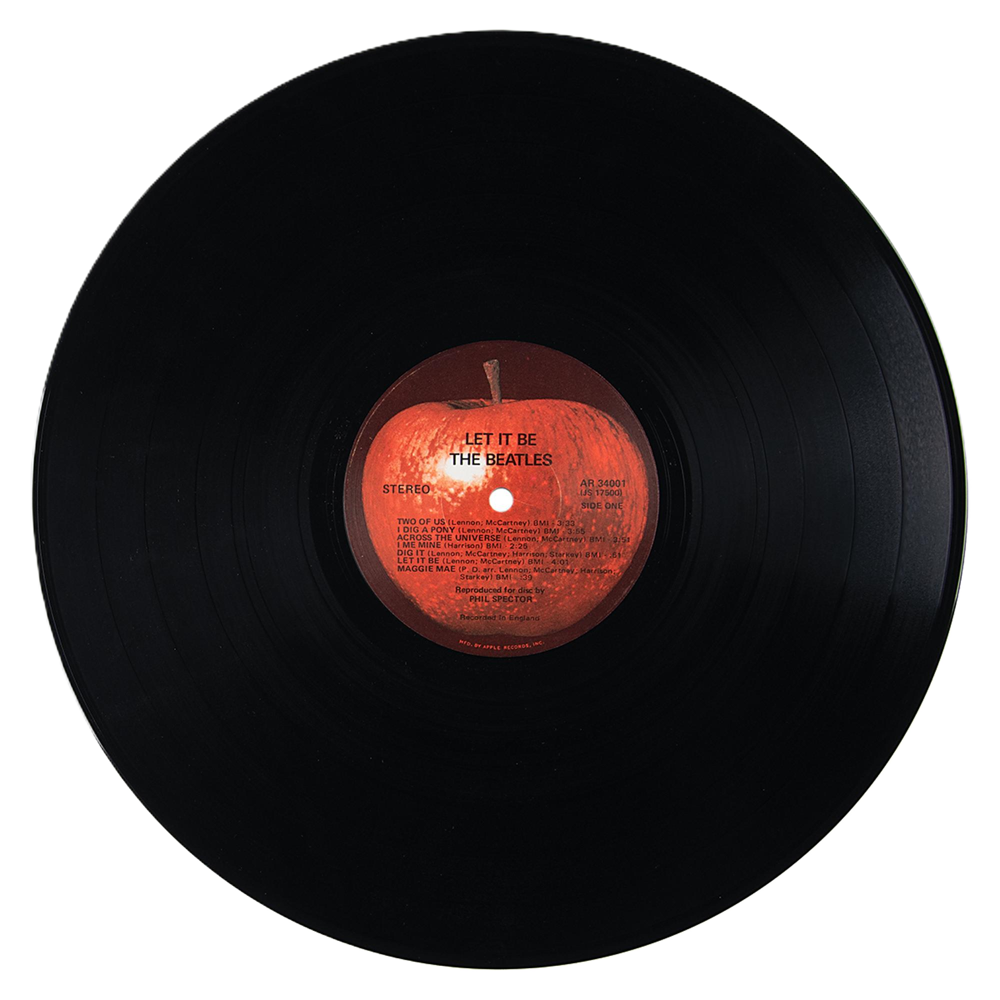

Apple Era
1968-1970
Inaugurada após um retiro na Índia e a criação da gravadora Apple Corps, essa fase traz um retorno ao rock cru, blues e folk, mas marcada por fortes tensões internas. Sem a liderança do empresário Brian Epstein, os quatro passaram a atuar quase como artistas solo até o fim oficial em 1970.


White Album (1968)
Lançado em novembro de 1968, o álbum duplo marca um retorno às raízes musicais após o retiro espiritual da banda na Índia. Com uma capa totalmente branca e minimalista, o disco apresenta o som mais eclético e fragmentado do grupo, funcionando quase como uma coleção de trabalhos individuais que transitam entre o folk acústico, blues rock, ska jamaicano, country, música concreta e o hard rock barulhento que ajudou a pavimentar o caminho para o heavy metal.
Curiosidade
Devido às fortes tensões internas durante as gravações, os integrantes frequentemente trabalhavam em salas separadas do estúdio. Ringo Starr chegou a pedir demissão e ficou duas semanas afastado da banda, período em que Paul McCartney assumiu a bateria em faixas como Back in the U.S.S.R. e Dear Prudence.
Destaques:
- Helter Skelter
- While My Guitar gently Weeps


Abbey Road (1969)
Lançado em setembro de 1969, foi o último álbum gravado pelos quatro Beatles juntos em estúdio, concebido como uma tentativa de deixar as brigas de lado e encerrar a trajetória da banda em alta. O disco abandona a crueza dos projetos anteriores para entregar uma produção polida e sofisticada, mesclando blues rock, pop sinfônico, soul e o uso pioneiro do sintetizador Moog, culminando em uma longa sequência de músicas interligadas (medley) que antecipou o rock progressivo.
Curiosidade
O plano original da banda era viajar até o Monte Everest para fotografar a capa e batizar o álbum com o nome da montanha. Com preguiça de fazer a viagem, decidiram simplesmente sair na porta do estúdio e atravessar a faixa de pedestres da rua Abbey Road em uma sessão de fotos que durou apenas dez minutos.
Destaques:
- Something
- Here Comes The Sun


Let It Be (1970)
Lançado em maio de 1970 — um mês após o anúncio oficial do fim da banda —, o disco nasceu originalmente sob o nome Get Back com a proposta de resgatar a essência ao vivo do grupo, sem truques de estúdio ou sobreposições. O som reflete um retorno direto às influências originais dos Beatles, apostando no rock and roll clássico dos anos 1950, rhythm and blues (R&B), folk rock e fortes arranjos de piano e órgão inspirados na música gospel.
Curiosidade
Sem conseguir decidir onde realizar o show final para o documentário que acompanhava as gravações, os Beatles subiram ao telhado do prédio da gravadora Apple Corps, em Londres, e fizeram sua última apresentação ao vivo por 42 minutos, até serem interrompidos pela polícia por reclamações de barulho.
Destaques:
- Let it Be
- Across the Universe